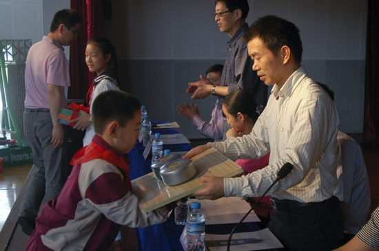

全国五子棋校园行活动启动仪式在首南第一小学隆重举行
首页
少儿五子棋
#1 全国五子棋校园行活动启动仪式在首南第一小学隆重举行 作者：有志青年 发表时间：2011-6-5 22:42:33
6月2日上午，2011年全国五子棋校园行活动在首南第一小学隆重举行，国家体育总局棋牌运动管理中心国际跳棋部副主任林丽梅、宁波市体育总会秘书长黄振辉、宁波市青少年宫副主任潘建亮、浙江省五子棋专业委员会会长徐永伟、区体育局体总秘书长李永祖、区教育局普教科副科长陈良、首南街道教辅室主任赵利兵、首南第一小学校长蔡岳伟出席了本次活动。
首先，蔡校长致欢迎词，蔡校长向在座的各位介绍了学校实施幸福教育所作的努力，在体艺棋类等各方面投入了巨大的精力和物力，就是为了让孩子能开心地学习，快乐地生活。接下来，青少年宫潘副主任和李永祖讲话，他们对学校开展五子棋活动，丰富学生的课余生活这项措施给予了肯定和支持，希望学校通过这类活动，培养学生广泛的兴趣，培养特长。随后，市体育总会秘书长黄振辉向首小赠五子棋书，徐会长赠送了棋板和棋子。最后，国家体育总局棋牌运动管理中心国际跳棋部林副主任宣布活动开始。
仪式结束后，还进行了丰富的实践活动，徐会长为在座的每一位讲解了五子棋的大盘，让家长和孩子了解了五子棋的规则。接下去的青少年擂台赛活动更加扣人心弦，青少年宫五子棋培训学员分四个擂台摆台，参加活动的学生和家长都可以选择棋子颜色进行攻擂，赢一台就能获得奖励品，孩子和家长兴致非常高，很多孩子都带着战利品，更有信心去攻克下一擂。最吸引人的还是知名棋手多面打，一名棋手，每轮挑战10名对棋者，而这名棋手丝毫不乱，沉着应对，几轮下来，对棋者能赢过他的也是寥寥无几。看来要达到这种水平，还需要经验和实践的积累。
习题解答和有奖竞猜同样精彩。整个体育馆洋溢着智慧和快乐。通过这次活动，在广大青少年中普及了五子棋知识，丰富了青少年的业余文化体育生活。


#2 Re:全国五子棋校园行活动启动仪式在首南第一小学隆重举行 作者：黄药师 发表时间：2011-6-6 0:23:29
 那个圈，小朱个有点挤啊
那个圈，小朱个有点挤啊
#3 Re:全国五子棋校园行活动启动仪式在首南第一小学隆重举行 作者：人生若子如初见 发表时间：2013-5-17 11:01:42
还是首都重视呀 很多时候感慨自己小时候没有这样的机遇
#4 Re:全国五子棋校园行活动启动仪式在首南第一小学隆重举行 作者：小红眼镜 发表时间：2013-5-17 12:31:56
楼上。。。挖坟本来就不对了。。。
结果你还说错o(s□t)o。。明明是浙江宁波。。。上哪里首都去。。
#5 Re:全国五子棋校园行活动启动仪式在首南第一小学隆重举行 作者：鱼岛岛主 发表时间：2013-5-17 13:01:54
楼上的 你楼上只是把首南看成首都了
#6 Re:全国五子棋校园行活动启动仪式在首南第一小学隆重举行 作者：屏蔽 发表时间：2013-5-17 13:10:29
楼上的 我认为把首南看成首都实在是太二了，足以吐槽
#7 Re:全国五子棋校园行活动启动仪式在首南第一小学隆重举行 作者：鱼岛岛主 发表时间：2013-5-17 18:56:55
楼上的，看到零威望不给加是因为那个投票吗？
#8 Re:全国五子棋校园行活动启动仪式在首南第一小学隆重举行 作者：屏蔽 发表时间：2013-5-17 20:46:39
不 是因为挖坟太二 不过 咦？……
#9 Re:全国五子棋校园行活动启动仪式在首南第一小学隆重举行 作者：超级天逸超人 发表时间：2013-5-19 21:57:19
举报举报楼上挖坟，我去 ……！
#10 Re:全国五子棋校园行活动启动仪式在首南第一小学隆重举行 作者：五子棋来吧走吧 发表时间：2014-1-30 15:27:18
#11 Re:全国五子棋校园行活动启动仪式在首南第一小学隆重举行 作者：自来水 发表时间：2014-3-24 16:05:06
好，反正我也没看过
#12 Re:全国五子棋校园行活动启动仪式在首南第一小学隆重举行 作者：康健 发表时间：2014-4-18 9:11:42
谁挖的坟~~~~~~~~~